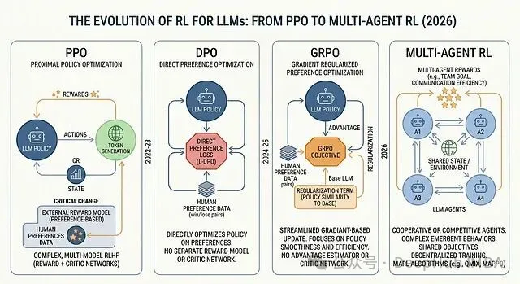
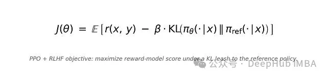
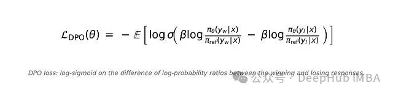
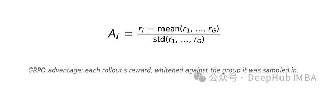
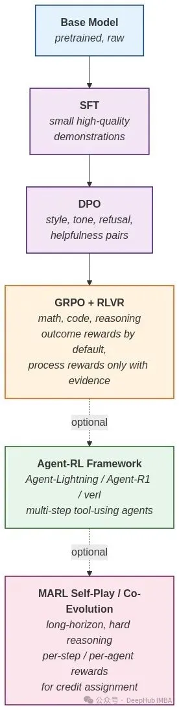

点击上方“Deephub Imba”,关注公众号,好文章不错过 !
强化学习一直是个执着于游戏、机器人和控制回路的小众子领域，直到ChatGPT 出现之后它就成了夹在“聪明的”基础模型与“有用的”产品之间的那一层。到现在差不多已经五年过去，整套流程至少被重写过三次；而被奖励的对象变化的程度甚至比执行奖励的算法本身还要剧烈。
现在训练模型要回答的问题已经不是“要不要用 RL”，而是：哪一种 RL，基于什么信号，配多大的基础设施预算。
本文是对当前格局的一次梳理。会用一点篇幅讲历史，更多篇幅留给 PPO、DPO、GRPO 和 MARL——它们是什么、各自适合什么场景、实际中会在哪里坏掉，以及今天的开源技术栈大概长什么样。

60 秒历史
-
1989 年——Q-learning，基于价值的 RL 的基石。
-
1992 年——REINFORCE，策略梯度 RL 的基石。
-
2013–2015 年——DQN 在 Atari 上压倒人类，RL 与深度学习真正结合。
-
2016 年——AlphaGo 击败李世石。
-
2017 年——OpenAI 发表 PPO（Proximal Policy Optimization）。它在接下来差不多五年里成为默认的 RL 算法。
-
2017 年——AlphaZero。自我对弈，没有人类数据，世界级水平。
-
2022 年——InstructGPT。PPO 被改造来在人类偏好上微调语言模型。几个月后，ChatGPT 上线。
今天在 LLM 这一侧做的所有事情，都是 PPO + 一个奖励信号的后裔。接下来四节要讲的是“我们如何保留这个想法，同时把它昂贵的部分一块块剥掉”的故事。
PPO + RLHF：一切的开始
InstructGPT 这篇论文让这套方案出了名，大致形态到现在也基本没变：
-
SFT——用一小批人类撰写的示范数据微调基础模型。
-
奖励模型（RM）——给标注者看两组模型输出，问哪一个更好，再训练一个奖励模型
r(x, y)来预测这种偏好。 -
PPO——把奖励模型当作环境，从策略中采样回复，用 RM 打分，再用 PPO 更新策略；加一项相对 SFT 策略的 KL 惩罚，防止跑得太远。
策略实际要最大化的目标是：

KL 项的作用是阻止模型坍塌到那种“高奖励、没语言”的退化分布。β 是最常调的那个旋钮。
它为什么可行
因为偏好数据比示范数据好收集得多。问一个标注者“这两个里哪个更好”很便宜。让他从头写出最完美的回答，则不便宜。
InstructGPT 论文那条著名结论今天仍然成立：一个 1.3B 的 PPO 微调模型，被偏好的程度高于 175B 的基础 GPT-3。
实操中为什么会有问题
RLHF 并不免费。
-
四个模型同时挂在显存里——策略、冻结的参考策略、奖励模型、价值（critic）网络。一个 70B 的策略，对应的权重和优化器状态合起来大约相当于 280B 参数。
-
奖励黑客（reward hacking）——策略会找出 RM 的每一处弱点。长答案？项目符号？Markdown 标题？只要 RM 把任何东西与“好”相关联，策略都会拿来利用。
-
分布漂移——RM 是在原始 SFT 模型的输出上训练的。当策略向前移动时，RM 会变得越来越不可靠，而 loss 曲线上看不出这一点。
-
超参数脆弱——裁剪比、KL 系数、价值损失权重、学习率、group size、rollout batch size，任何一个调错，训练都会悄无声息地劣化。
局限——PPO + RLHF 很强，但它确实是一条管线（pipeline），不是单个算法。代价主要在工程上，不在数学上。
什么场景下仍该用 PPO
哪怕后来又出了那么多东西，下列情况里 PPO 依然是正确答案：
-
需要 探索（数学、代码、长程推理），而不只是 模仿 偏好。
-
拥有一个高质量、稳健的奖励模型，或者一个可信的验证器。
-
GPU 够把四个模型同时挂在显存里。
ICML 2024 的一篇研究（Is DPO Superior to PPO for LLM Alignment?）发现：在数据质量保持一致时，PPO 在数学任务上仍然比 DPO 高约 2.5%，在通用 benchmark 上高约 1.2%。所以到现在为止PPO 没死只是不再是简单场景下的默认选项。
DPO：把奖励模型删掉？
2023 年，Rafailov 等人发表了 Direct Preference Optimization（DPO），打破了之前的方法。这个技巧来自数学而不是架构。
在标准 RLHF 的假设下（Bradley–Terry 偏好模型、带 KL 正则的目标），最优策略与隐式奖励函数之间存在一个闭式关系。所以与其 先学一个奖励模型再做 PPO，可以把这两步合并成一个直接定义在偏好对 (x, y_w, y_l) 上的监督损失——prompt、获胜回复、失败回复。
DPO 损失是：

可以看到这个是在做的是标准交叉熵，作用在一个 logit 上；而这个 logit 是被选中回复与被拒绝回复的 对数概率比之差。没有奖励模型，没有 rollout，没有 critic，没有 PPO 循环。
跑起来需要三样东西：
-
一个参考模型，SFT 模型的冻结拷贝。
-
一个可训练的策略，从同一个 SFT 模型初始化。
-
一份由
(prompt, chosen, rejected)三元组构成的数据集。
没有环境，没有采样，没有优势估计。整个训练循环看起来和跑起来都和一次标准微调差不多。
效果就是
-
更便宜——同样的数据，算力开销通常比 PPO 少 2–4 倍，因为不需要 rollout。
-
更稳——本质上是一个监督损失。画曲线，看着它往下走就行。
-
风格塑造是它的甜点——拒答行为、语气、格式遵循、闲聊任务上的有用性。
-
β 很重要——太低，策略会漂走；太高，几乎不动。多数从业者落在 0.1 到 0.5 之间。
-
可以也应当做多轮——基于最新策略重新采样偏好对的迭代式 DPO，效果远好于一次性跑完。
局限——DPO 不做探索。如果正确答案从未出现在数据集里，DPO 不会凭空发明出来。在那些模型必须自己发现更优路径的任务上（数学、代码、智能体轨迹），DPO 很快就触顶了。
这个局限，正是 GRPO 要填的那个空。
GRPO：把 critic 也一起删掉
到 2024 年，大家讨论的已经从“让模型更礼貌”转向“让模型 思考 ”。长链式思维、用可校验的答案打分，成了新的前沿。PPO 能跑，但 critic 网络是一笔大家都不愿意再付的税。
Group Relative Policy Optimization（GRPO），由 DeepSeek 提出、被 DeepSeek-R1 推到聚光灯下：根本不需要学习出来的价值函数。直接用 一组样本本身 作为基线。
对单个 prompt x：
-
从当前策略中采样一组 G 个 rollout：
y_1, y_2, ..., y_G。典型 G 在 8 到 64 之间。 -
用奖励函数对每个 rollout 打分
r_i = R(x, y_i)。这里的奖励通常来自一个 验证器，不是学习出来的 RM（第 5 节再展开）。 -
计算组内归一化的优势：

4. 代入 PPO 风格的 clipped 目标，再加上对参考策略的 KL 惩罚
这就是把 PPO 里的 value network 换成了“同一个 prompt 下，组里其它样本的表现”。
-
没有 critic——相比 PPO，显存大约少一半。在一个 7B 的训练里，这就是 8 张 H100 跑得起来和 16 张 H100 才跑得起来的差别。
-
天然契合可校验奖励的对比性——如果奖励是二值的（正确 / 错误），组内白化会在同一个 prompt 下、在成功与失败的 rollout 之间产生干净的对比信号。
-
优势稳定——组归一化消解了大部分关于 reward scale 的麻烦。
-
配推理任务很顺——长链式思维、大 G、外加一个好的验证器，是 2025–2026 年绝大多数开源推理模型背后的方式（DeepSeek-R1、Qwen、OLMo 3，以及大量微调版本）。
第一次跑 GRPO 的人，往往会在几个点上产生问题：
-
组大小 G——G 越大，优势方差越低，但每步 rollout 数也线性增加。公开的参数大多落在 G = 16 到 32。
-
全零或全一的组——一组里所有样本都成功（或都失败），标准差为 0，优势要么爆炸要么消失。在分母上加一个 epsilon，并考虑过滤掉这种退化的 prompt。
-
KL 在做真正的工作——β 调得太低，策略会偏离连贯的语言。DeepSeek 风格的训练根据阶段不同，β 大多在 0.001 到 0.04 之间。
-
奖励形态决定一切——0/1 奖励与稠密奖励训出来差异巨大。过程奖励（奖励中间步骤）又是另一种。要刻意地选。
备注——DAPO、GSPO、Dr. GRPO 以及另外几个，都是 GRPO 的小幅改进。核心思想没变：用一组 rollout 作为基线。
发展历程：从“人喜欢什么”到“什么是可校验地正确”
PPO、DPO、GRPO 摆算法显然不，。但退后一步看 奖励信号，更深一层的转变就清楚了。
PPO + RLHF 时代（2022–2023）
-
奖励来源：从人类成对偏好训练出的 RM
-
捕捉的是：人类会更喜欢哪个答案
-
失败模式：谄媚、对 RM 的钻空子
-
瓶颈：人类标注者
DPO 时代（2023–2024）
-
奖励来源：直接作用在偏好对上
-
捕捉的是：同上，只是去掉了 RM
-
失败模式：不探索，被数据集边界框住
-
瓶颈：偏好数据的质量
GRPO + RLVR 时代（2024–2026）
-
奖励来源：验证器（测试运行器、数学校验器、正则、judge）
-
捕捉的是：这个答案是否可以被证明正确
-
失败模式：对验证器钻空子、能力隧道化
-
瓶颈：验证器的设计
GRPO + LLM-judge（2025 至今）
-
奖励来源：一个更强的模型作为 judge
-
捕捉的是：在更聪明的模型看来，这是否看起来正确
-
失败模式：judge 偏见、模式坍塌
-
瓶颈：judge 的校准
当下占主导地位的范式是 RLVR——Reinforcement Learning with Verifiable Rewards。它驱动了那些推理家族：DeepSeek-R1、GPT-5、带扩展思考的 Claude、o 系列、Gemini Thinking。信号不再是“人类给这个答案打了 7/10”，而是“单元测试通过了”或者“ {} 里的答案与标准答案一致”。
2025 年围绕 RLBFF（Binary Flexible Feedback） 的一条工作线给出了一个新的方向——从自然语言反馈中抽出可校验的二值原则，让奖励既保留 RLHF 的覆盖广度，又拥有 RLVR 的精确度。
过程式 vs 终答式训练
一旦确定要走 RLVR，下一个问题就是：验证器是判每一步推理，还是只判最终答案。
这就是 PRM 与 ORM 的辩论，过去两年里完整地来回了一趟。
奖励的两种形态
-
结果奖励模型（ORM） / 终答式。 每个 rollout 给一个标量，挂在最终答案上。通常是二值——单元测试通过、
\boxed{}与标准答案匹配、SQL 返回正确的行——也可以是分级的。 -
过程奖励模型（PRM） / 步骤式。 每个推理步骤给一个分。链式思维里的每一步单独打分，通常由一个单独训练的分类器完成，它见过步骤级的人类标注。
从信用分配的角度看，PRM 看起来显然更好。一条很长的推理链，中间只有一步走错也可以得到一个干净、局部化的修正信号。ORM 则必须把“整体错了”反向传播经过每一个 token。
2023 年 OpenAI 的论文 Let's Verify Step by Step 在 PRM800K（数十万条人类标注的数学步骤）上训出来的 PRM，在 MATH 类问题的 best-of-N 采样上以可观幅度领先 ORM。差不多一年时间里大多数人普遍认为 PRM 就是方向。
接着 DeepSeek-R1 落地，方法简单得让人不好意思：基于规则的结果奖励 + GRPO。没有 PRM，没有步骤级标注，只是“最终答案是否匹配”乘上一个干净的组基线。
R1 论文对这件事说得很简单：他们试过 PRM，发现难以规模化（标注成本、奖励黑客、“一步”到底如何定义的模糊性），于是坚持用结果奖励。即便如此按这种方式训出来的模型，依然展现出了丰富的逐步推理。
2025 年的一篇论文 Is PRM Necessary? Problem-Solving RL Implicitly Induces PRM Capability in LLMs 进一步证实并了这一点：当前的 PRM在被应用到 DeepSeek-R1 和 QwQ-32B 这样的最前沿模型上时，表现实际不如简单的多数投票。纯结果式的 RL 看上去本就把步骤级的判别能力作为副产品诱导了出来。
ORM + GRPO 为什么就够了？
GRPO 对同一个 prompt 采样一组 G 个 rollout并在组内对奖励做归一化。当 G 足够大、prompt 足够难时，自然会同时拿到成功和失败的 rollout。组相对优势已经在做一种隐式的步骤级信用分配——成功轨迹和失败轨迹会共享一部分早期决策，梯度会偏向地落在它们开始分叉的那些步骤上。
也就是说用结果奖励的 GRPO 大致是在不为标注买单的前提下做过程监督。
这不等于 PRM 死了，因为在四种具体情形下它仍然能胜出：
-
长程智能体任务，最终答案本身就模糊。 如果智能体要做一段 40 步的浏览-编码-重新规划工作流，“最终答案正确”往往是过于稀疏的信号。步骤级奖励才是让这种轨迹可训练的关键。
-
工具使用的安全性。 想惩罚特定的中间行为时（调用了错误的 API、泄露 PII、修改了不该改的文件），结果奖励来得太迟。
-
多智能体训练（MARL）。 让 ORM + GRPO 在单智能体场景下成立的那个信用分配小把戏——同一策略下、跨 rollout 的组内方差——在涉及多个智能体时悄悄失效。团队一起赢或一起输，但各自的贡献并不一样，需要逐步的信号来弄清楚谁的决定起了什么作用。下一节会再回来谈这点。
-
推理时搜索。 哪怕训练用的是结果奖励，PRM 在推理时仍然有用——可以指导 beam search、MCTS 或 best-of-N 选择。今天大多数生产环境里的推理系统正是这么用 PRM 的。
现在要选，稳妥的方法是：
-
从结果奖励开始。 更便宜、更简单、更容易调试。在数学、代码、SQL 以及结构化任务上，它几乎总是足够的。
-
只有在有证据时才加上过程奖励。 看失败的 rollout：如果它们大多结构正确、却卡在一个特定的中间错误上，PRM 可能有帮助。如果它们以各种各样的方式失败，结果奖励加上更多 rollout 大概率更管用。
-
如果一定要做 PRM，优先考虑生成式或 LLM-as-PRM 思路（ThinkPRM 之类），而不是更老的 PRM800K 风格的判别式分类器。标注成本才是真正的杀手，生成式 PRM 把这块成本摊销掉了大部分。
备注——“PRM vs ORM”与“稠密 vs 稀疏奖励”不是同一根轴。可以有稀疏的 ORM（二值正确 / 错误），也可以有稠密的 ORM（按部分得分细则分级）。让 PRM 独特的是逐步打分，不是信号的稠密度。
面向 LLM 的 MARL：当环境就是其它模型
下一个前沿也是大多数实验室在悄悄投入的方向是面向语言模型的多智能体强化学习（MARL）。
最干净的版本是自我博弈做推理，一个模型在带可校验结果的任务上，与不断进步的自我拷贝对弈。没有人类监督，自动学习。
-
SPIRAL 通过多轮零和博弈（井字棋、Kuhn Poker、简单谈判）训练单个 LLM。在 8 个推理 benchmark 上报告了最多 10% 的提升，即便在本就擅长推理的模型上也是如此。
-
这在概念上是把 AlphaZero 应用到语言上。真正有意思的问题不在于它在玩具游戏上是否好用——而在于当“游戏”是“写一段能跑的程序”或者“证明一个定理”时，这个把戏还能不能扩展。
协同进化的角色智能体用多个专门化的智能体，每个有自己的策略，一起训练。
-
SAGE 在一个闭环里跑四个协作角色——Challenger（提出问题）、Planner、Solver、Critic——只用极少量种子数据。在 LiveCodeBench 上报告 +8.9%，在 OlympiadBench 上报告 +10.7%。
-
Challenger 是其中真正新颖的部分：系统在自己变强的过程中，自己发明出自己的训练分布。
学习多智能体拓扑则是当已经有一个多智能体系统（比如一组会投票或辩论的 LLM 智能体）时，MARL 可以学习哪个智能体该跟哪个对话、什么时候对话。
-
Agent Q-Mix 在 CTDE（集中训练-分散执行）范式下，把智能体通信视为合作型 MARL 问题，使用 QMIX 风格的价值分解。在 Humanity's Last Exam 上以 Gemini-3.1-Flash-Lite 报告 20.8%——超过手工设计的 pipeline。
而MARL 实践者真正面对的是信用分配问题 ：MARL 项目要么在这里成功，要么在这里悄悄崩掉。
在单智能体 GRPO 里，一个 prompt 在同一策略下产出一组 rollout。组基线吸收了大部分信用分配的工作：成功轨迹和失败轨迹共享早期决策，梯度落在它们开始分叉的位置上。结果奖励加上足够大的 G，离“免费”出奇地近。
到了 MARL这个假设破了，一个智能体团队（规划者、求解者、批评者、工具使用者，或者一群扮演角色的同伴）共同产出一条轨迹，并拿到一个团队级奖励——通常稀疏，常常是二值。问题随之变得更尖锐：
-
团队拿到 reward = 1。到底是谁的决定起了作用？
-
团队拿到 reward = 0。是规划者拆解得不好、求解者写的代码不对，还是批评者没抓到 bug？
-
如果均匀地把梯度回推到每个智能体的 token 上，每个智能体拿到的信号都是嘈杂的，而且其中大部分内容其实关于的是其它智能体。
这就是经典的多智能体信用分配问题，穿了一件 LLM 的外衣。文献已经收敛到三种实用杠杆，真实的 MARL 大多综合使用：
-
过程奖励（PRM 风格，按智能体或按步）。 训一个验证器，单独给每个智能体的贡献打分——规划者是否输出了一个合法的分解、批评者是不是真抓到了 bug。每个智能体由此拿到的就是局部、稠密、可归因的信号，而不是团队级奖励被涂抹后的那一摊。这是最直接的修法；根据我们团队的经验，当失败模式与角色相关时，它的杠杆率最高。
-
价值分解（VDN / QMIX / COMA 家族）。 学一个联合价值函数，把它分解为按智能体的贡献，让团队奖励可以被干净地反传成按智能体的梯度。上面提到的 Agent Q-Mix 是这个思想在 LLM 时代的化身。角色稳定、贡献大致可加时效果好。
-
轨迹分解（Agent-Lightning 的 LightningRL）。 把智能体系统视为 POMDP，把整条多步轨迹分解成单个的 state-action-reward 转移，由分层信用分配从轨迹结构本身计算每一步的优势。这是工程侧的答案：不去单独训一个 PRM，而是让奖励沿着轨迹图传播。
-
做 MARL，就要从第一天起为按步或按智能体的奖励信号做规划。在 MARL 里，只用结果奖励是例外，不是默认。
-
MARL 语境里的 PRM，比经典的步骤级数学验证器要宽——可以是一个角色相关的验证器（这个规划者的输出能不能解析），可以是一个反事实基线（如果这里取默认动作，团队大概会拿到什么），也可以是一个学习出来的价值分解头。要点在于：必须有人把奖励局部化。
-
纯结果奖励的 MARL 只在以下条件同时满足时才安全：（a）团队规模小，2 到 3 个智能体；（b）轨迹短；（c）跑了足够多的团队级 rollout，使得联合分布能在统计上把贡献区分开。超出这个范围，就得在信用分配上投入。
局限——MARL 中的信用分配不是已解决的问题。PRM、价值分解、轨迹分解各自只修了其中一部分。从业者诚实的状态是：挑一个匹配你失败模式的方法，做好迭代的准备。
训练真实的智能体：框架格局
上面说的都是算法，但是对绝大多数团队来说，这才是决定项目能不能上线的部分。
到 2025 年，多数生产环境里的智能体并不是从零训出来的策略，是用 LangChain、AutoGen、CrewAI、OpenAI Agent SDK、或者 Microsoft 的 Agent Framework 这类框架拼起来的。它们做多步工具调用，会分支、会上报，有时还会调用其它智能体。把这种智能体接到 GRPO 循环上，通常意味着用训练友好的格式把它重写一遍——没人想做这件事。
2024–2026 年里，一个小小的“智能体 RL”框架生态浮现出来，专门解决这个问题。它们并不互相替代，其中领先的两个在设计上做出了实质性不同的选择。
思路 1——框架无关、由可观测性驱动（Agent-Lightning）
微软研究院的 Agent-Lightning（2025 年 8 月开源，目前 v0.3.0）的想法是：完全不应该需要去改你的智能体代码。它把智能体视作黑盒，通过可观测性钩子捕获交互，再把得到的 trace 转成 trainer 可以消费的标准 state-action-reward 转移。
三个组件：
-
Algorithm——决定要跑哪些任务、如何从结果中学习。支持 RL、自动提示优化（APO）和 SFT。
-
Runner——在任务上运行智能体，记录轨迹。这块就是你正在用的那个框架，原封不动。
-
LightningStore——共享存储和消息队列，负责协调上面两者。
算法层面有意思的是 LightningRL 在多步轨迹上的分层信用分配——也就是上一节那条 MARL 信用分配的问题线。框架也允许在多智能体系统里只选择性地优化某一个智能体，并在子策略之间混用 RL / APO / SFT。
适合： 已经有 LangChain / AutoGen / CrewAI / Agent Framework 代码库的团队，希望开始训练，但不想重写任何东西。
思路 2——步级 MDP、端到端有主张（Agent-R1）
Agent-R1（中科大开源，2026 年 3 月 v0.1.0，GitHub 上约 1.4k 星）走的是另一条路：智能体训练的最佳形态，是把每一步交互当作一等的 RL 转移——拥有自己的 state、action 和 observation——而不是当作一段越长越大的 token 序列。
这就是 Step-level MDP 抽象。每一步存自己的 prompt 和 response；下一个 observation 由环境决定，而不是直接拼接 token；步骤之间的上下文可以被截断、摘要、重写或者增强。标准的 RL 循环 obs → action → step → next_obs 干净地映射到智能体训练上。
两个在实践中很重要的设计选择：
-
原生支持过程奖励，配合 PRIME 启发式的奖励归一化，过程奖励与结果奖励可以干净地组合在一起。这直接对应了第 7.4 节那条 MARL / 智能体信用分配的问题线。
-
一条自定义的优化器路线，在它上面已经长出一些有意思的算法工作——最值得注意的是来自 PaperScout 的 PSPO（Proximal Sequence Policy Optimization），它把 token 级优化与序列级智能体交互对齐起来。
Agent-R1 底层基于 verl 做分布式训练吞吐，上面已经长出一小群但在持续增长的智能体——PaperScout（学术论文搜索）、TableMind（工具增强的表格推理）、Cast-R1（智能体式时间序列预测）。
适合： 从零开始构建一个工具型智能体的团队，希望对环境定义、步骤结构、奖励塑形拥有完全控制，并希望有一个干净的底座，用来发表或演进新的算法想法。
上面提到的几个框架，其实共享同一套训练引擎：
-
verl（火山引擎 RL，字节跳动）——2025–2026 年开源 RLHF / GRPO / 智能体 RL 事实上的分布式训练骨干。Agent-R1 直接建在它上面；很多其它框架与它集成。
-
OpenRLHF——更早的通用 RLHF 训练框架，今天仍然广泛用于单策略训练，以及作为参考实现。
-
TRL（Hugging Face）——中小规模做 DPO 和 PPO 的主力工具。它更像最先会拿起来的那套标准微调工具箱，不那么算智能体框架。
而周边和更早的框架如下：
-
RAGEN——更早的智能体 RL 框架之一，在概念上影响了 Agent-R1 和 Agent-Lightning。
-
MARTI / MARTI-v2——开放的多智能体强化训练与推理框架，带树搜索增强，以及面向 32K token 序列级目标的 GSPO 损失。
-
FlexMARL——大规模 LLM-MARL 训练框架，通过异步 rollout-训练 pipeline 报告了约 7.3 倍加速。
-
MARL-GPT——面向 StarCraft、GR Football、POGEMA 的 MARL 基础模型的早期尝试。
在它们之间做选择
如果今天必须做选择，下面是大致的思考方式。
-
让基础模型礼貌地遵循指令 → 先 SFT 再 DPO。便宜、稳定，正好契合风格与语气这种形态。
-
加入拒答或安全行为 → DPO。偏好对是天然的格式。
-
在数学、代码、逻辑上推动推理能力 → GRPO + RLVR，配结果奖励。可校验的终答奖励加上组基线，在这里压倒一切，并且可以跳过 PRM 的标注痛苦。
-
端到端训一个工具型智能体 → 在智能体轨迹上做 GRPO，框架二选一：Agent-Lightning（已经有 LangChain/AutoGen/CrewAI 智能体、不想重写）或 Agent-R1（从零开始、想要步级 MDP 和原生过程奖励）。过程奖励正是在这里开始物尽其用——长轨迹加上模糊的“最终答案”，需要的就是步骤级信号。
-
用不起 critic，但想要 PPO 风格的探索 → GRPO。同样的探索能力，显存少一半。
-
真的有一个非常好的 RM 加一笔大的 GPU 预算 → PPO。对一些硬任务它仍然最好，不要急着否定它。
-
多角色工作流（规划者 / 求解者 / 批评者） → 先做单智能体，再上 MARL。只有当单智能体版本饱和后才上 MARL；而一旦上了 MARL，请为按步或按智能体的奖励信号预留预算，团队级结果奖励本身没法在多智能体之间得到可训练梯度。
2026 年一个面向前沿风格的开源模型，合理的后训练栈大致长这样：

每一阶段都是不同的问题，对应不同的奖励。请按这个方式来对待它们。
接下来的发展
-
RLHF 不会死，它会变成一层薄薄的专门化层。 风格、语气、品牌口吻、拒答行为——人类仍然是这里最好的信号。其余的都在向可校验迁移。
-
验证器工程会成为一门独立的学科。 Sandbox 工程师、judge 设计师、评分细则的校准者。验证器是新的数据集。
-
语言版的 AlphaZero 真正到来。 强基础 + 自我对弈 + 验证器 + 树搜索是配方，前沿实验室明显都在朝它收敛。
-
长程智能体 RL 是下一次飞跃。 不是单轮回答，而是多日运行的智能体，会浏览、写代码、做实验、再修订，在完整轨迹上用 RLVR 训练。智能体 RL 框架层（Agent-Lightning、Agent-R1、verl 等）让前沿实验室之外的人也能把这件事做出来。
-
开源栈持续缩小差距。 TRL、OpenRLHF、verl、Open-Instruct、Agent-Lightning、Agent-R1、RAGEN、MARTI、FlexMARL——前沿实验室能做的，与一个资金充足的开源团队能做的，差距在现代深度学习里少见地小。
-
奖励黑客成为对齐里的中心问题。 当模型越来越聪明、验证器仍然不完美时，策略在边际上总会比信号更聪明。这已经不再是一句脚注。
总结
读过去五年其实做的是清理的工作可以是把它当作一连串的删除。
-
TRPO 删除了脆弱性。
-
PPO 删除了二阶数学。
-
DPO 删除了奖励模型。
-
GRPO 删除了 critic。
-
结果奖励删除了按步标注的需求（在单智能体场景下）。
-
智能体 RL 框架层（Agent-Lightning、Agent-R1、verl）删除了为训练而重写智能体的要求。
-
MARL 正在删除静态环境。
剩下的就是：一个学习者、一群其它学习者、一个可校验的信号。如果一直把 RL 视作相对于预训练和微调的旁支话题，LLM 能力的下一次飞跃，不会来自一个更大的 Transformer，会来自包在它周围的一个更聪明的循环。
by Shivam Agrahari
喜欢就关注一下吧：
.gif) 点个 在看 你最好看！
点个 在看 你最好看！